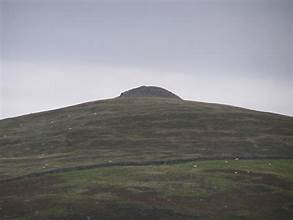
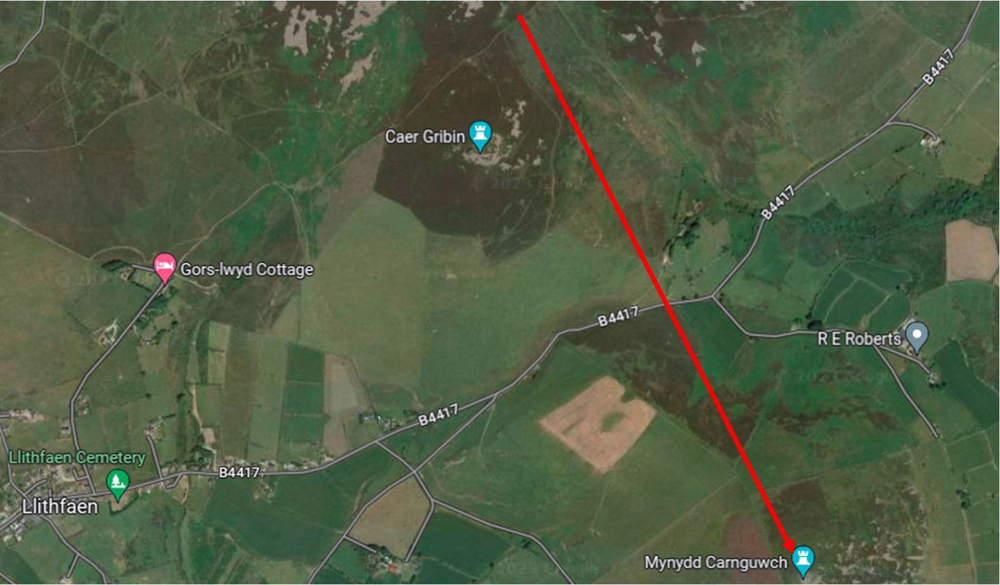

Carnguwch

Auf dem Gipfel von Carnguwch Mountain, nordoestlich von Llithfaen, befindet sich ein Grabhuegel. Während des zweiten Jahrtausends vor Christus wurden Menschen oft in einer Steinkiste unter einem Steinhaufen begraben. Diese Steinhaufen nennt man "Carnedd", und es gibt zahlreiche Gipfel in Snowdonia und Llyn, auf denen sich solche Steinhaufen befinden.
Y garnedd gladdu ar gopa Mynydd Carnguwch.
Der Steinhaufen auf Carnguwch Mountain ist oval und und hat ein Ausmass von 43 auf 31 Meter. Er wurde auf einem Stück Naturfelsen errichtet. Er ist über 6 Meter hoch und die Oberflaeche war ursprünglich mit grossen flachen Oberflächensteinen bedeckt. Heute sind diese Oberflächensteine in einem eher traurigen Zustand, obwohl man die ursprüngliche Form des Steinhaufens noch deutlich erkennen kann.
 Y wawr dros Mynydd Carnguwch.
Y wawr dros Mynydd Carnguwch.
Dieser Steinhaufen war das Grab eines Individuums. Wer wurde hier begraben? Wir werden es nie erfahren, aber sicher ist, dass jemand erhebliche Anstrengungen unternommen hat, um diesen Steinhaufen zum Gedenken an einen geliebten Menschen zu errichten.
An den östlichen Hängen des Carnguwch-Berges gibt es verstreute Rundhäuser, hier lebten die Menschen, die hier in der Eisenzeit lebten und Landwirtschaft betrieben. Sie waren Jahrhunderte vor und auch waehrend der Roemerzeit besiedelt. Eine grosse Anzahl befinden sich in der Naehe von den Bauernhoefen Carnguwch Fawr, Tyddyn Bach und Llech-engan.
Da das Land hier relativ fruchtbar ist, finden wir auch Spuren mittelalterlicher Plattformhäuser. Dies bestätigt, dass die Praxis der Kultivierung des Landes im Laufe der Jahrhunderte fortgesetzt wurde. Ein gutes Beispiel für ein Plattformhaus ist in der Nähe der Kirche zu sehen – nördlich der Penfras Uchaf Farm. Es gibt mehrere andere Beispiele südlich von Hafod am Nordhang des Carnguwch-Berges.
Die alte Kirche St. Beuno befindet sich südlich des Carnguwch-Berges, und dort wurde ein stehender Stein entdeckt, zusammen mit einigen Gegenständen auf den umliegenden Feldern, die aus der Bronzezeit stammen, der gleichen Zeit wie der Grabhügel auf dem Gipfel. In dieser Gegend können wir historische und prähistorische Landschaften sehen.
Der Grabhügel auf dem Carnguwch Mountain ist ein markantes Merkmal der Landschaft und man sieht ihn von weitem wenn man in Richtung Llithfaen schaut.
Map yn dangos cyfeiriad Mynydd carnguwch o lethrau’r Eifl